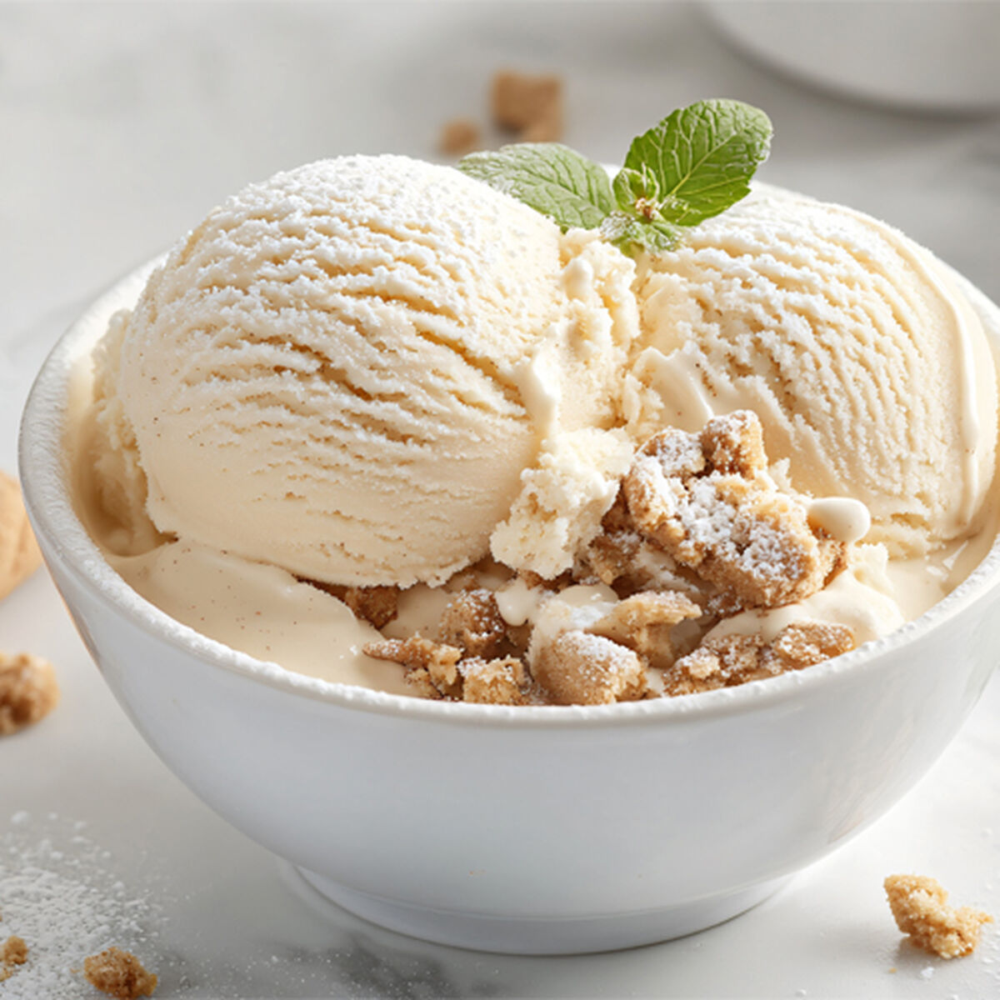

Classic Vanilla Ice Cream
By Chef Rjay · July 6, 2025
This classic vanilla ice cream is creamy, smooth, and bursting with pure vanilla flavor. A perfect treat on its own or paired with your favorite dessert!
Tags:
Ice Cream
Vanilla
Dessert
Category:
Frozen
Dessert
Ingredients
2 cups heavy cream
1 cup whole milk
3/4 cup granulated sugar
1 tbsp pure vanilla extract
Pinch of salt
Instructions
In a bowl, whisk together cream, milk, sugar, vanilla, and salt until sugar is dissolved.
Pour the mixture into an ice cream maker and churn according to the manufacturer’s instructions.
Transfer to a container and freeze for 2–4 hours until firm.
Scoop and serve with your favorite toppings!
Share:
Facebook
Twitter
Pinterest
← Back to Blog
Comments